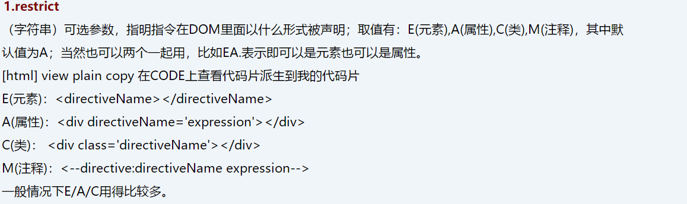

上海分院：顾配如
1.背景介绍
2.知识剖析
3.常见问题
4.解决方案
5.编码实战
6.扩展思考
7.参考文献
8.更多讨论
AngularJS与jQuery最大的区别在哪里？我认为，表现在数据双向绑定，实质就是DOM的操作形式不一样。 JQuery通过选择器找到DOM元素，再赋予元素的行为； 而AngularJS则是，将指令与DOM绑定在一起，再扩展指令的行为。 所以AngularJS开发最理想的结果就是，在页面HTML与CSS的设计时，设计工程师只需要关注指令的使用；而在背后的逻辑开发上，架构工程师则是不需要知道如何操作DOM，只需要关注指令背后的行为要如何实现就行；测试工程师也可以开发针对指令的单元测试。 指令就是DOM与逻辑行为的媒介，本质就是DOM绑定的独立逻辑行为函数。
AngularJS 通过被称为 指令 的新属性来扩展 HTML。 AngularJS 通过内置的指令来为应用添加功能。 AngularJS 允许你自定义指令。
如一些内置指令：ng-repeat 指令会重复一个 HTML 元素
ng-app 指令定义了 AngularJS 应用程序的 根元素
ng-model 指令 绑定 HTML 元素 到应用程序数据。
除了 AngularJS 内置的指令外，我们还可以创建自定义指令。 你可以使用 .directive 函数来添加自定义的指令。
格式：angular.module("app",[]).directive("directiveName",function(){ return{ //通过设置项来定义 }; })
看看有哪些
angular.module('app', [])
.directive('myDirective', function() {
return {
restrict: String,
priority: Number,
terminal: Boolean,
template: String or Template Function:
function(tElement, tAttrs) {...},
templateUrl: String,
replace: Boolean or String,
scope: Boolean or Object,
transclude: Boolean,
controller: String or
function(scope, element, attrs, transclude, otherInjectables) { ... },
controllerAs: String,
require: String,
link: function(scope, iElement, iAttrs) { ... },
compile: // 返回一个对象或连接函数，如下所示：
function(tElement, tAttrs, transclude) {
return {
pre: function(scope, iElement, iAttrs, controller) { ... },
post: function(scope, iElement, iAttrs, controller) { ... }
}
return function postLink(...) { ... }
}
};
});
把它们分成三类： 描述指令或DOM本身特性的内部参数 连接指令外界、与其他指令或控制器沟通的对外参数 描述指令本身行为的行为参数
内部参数

priority: Number，指令执行优先级
template: String，指令链接DOM模板，
templateUrl:String，DOM模板路径
replace: Boolean，指令链接模板是否替换原有元素，
看一下具体分析
template（字符串或者函数）可选参数，可以是： （1）一段HTML文本
（2）一个函数，可接受两个参数tElement和tAttrs其中tElement是指使用此指令的元素，而tAttrs则实例的属性，它是一个由元素上所有的属性组成的集合（对象）
templateUrl（字符串或者函数），可选参数，可以是 （1）一个代表HTML文件路径的字符串 （2）一个函数，可接受两个参数tElement和tAttrs（大致同上）
replace （布尔值），默认值为false，设置为true时候，
对外参数——scope
scope参数非常重要，。
scope参数的作用是，隔离指令与所在控制器间的作用域、隔离指令与指令间的作用域。
scope参数是可选的，默认值为false，可选true、对象{}；
false：共享父域
true：继承父域，且新建独立作用域
对象{}：不继承父域，且新建独立作用域
false、true、{}三者对比
来看个例子
.transclude 如果不想让指令内部的内容被模板替换，可以设置这个值为true。一般情况下需要和ngTransclude指令一起使用。 比如：template:"
行为参数——link与controller
需要用Directive的情景
指令作用
它就相当于为我们写了公共的自定义DOM元素或CLASS属性或ATTR属性，并且它不只是单单如此，你还可以在它的基础上来操作scope、绑定事件、更改样式等。通过这个Directive，我们可以封装很多公共指令，比如分页指令、自动补全指令等等。然后在HTML页面里只需要简单的写一行代码就可以实现很多强大的功能。
BY——顾配如